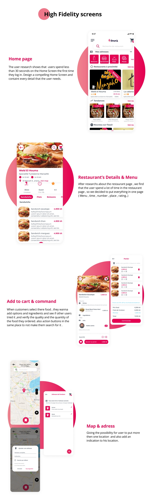

Project
Fissa3
Food delivery built during the COVID lockdowns
A Tunisian food delivery platform whose stated purpose was not margin but employment — developing the business of restaurateurs and creating work for people who did not have it. I ran the research, personas and empathy mapping, then took it from task flows through sketches and wireframes to high fidelity.

100+Delivery people available
5%Platform fee
45 daysFree trial for restaurants